Systems of Nonlinear Equations and Inequalities: Two Variables
Learning Objectives
- Graph a parabola (IA 11.2.1)
- Graph a circle (IA 11.1.4)
Objective 1: Graph a parabola (IA 11.2.1)
A parabola is all points in a plane that are the same distance from a fixed point and a fixed line. The fixed point is called the focus, and the fixed line is called the directrix of the parabola.
| Vertical Parabolas | ||
|---|---|---|
| General form |
Standard form |
|
| Orientation | up; down | up; down |
| Axis of symmetry | ||
| Vertex | Substitute and solve for y. |
|
| y-intercept | Let | Let |
| x-intercepts | Let | Let |
Graph the parabola
Solution
| Standard form | ||
| Step 1 | Since the parabola opens downward | 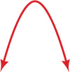 |
| Step 2 | The axis of symmetry is given by , The axis of symmetry is |
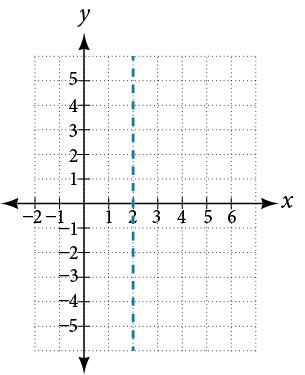 |
| Step 3 | The vertex is on the line Let's substitute into The vertex is the point (2, 1) |
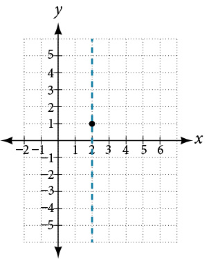 |
| Step 4 | To find y-intercept, substitute into The y-intercept is the point (0, -3) and is it 2 units to the left of the vertex. The symmetric point is 2 units to the right of the vertex and is (4, -3) |
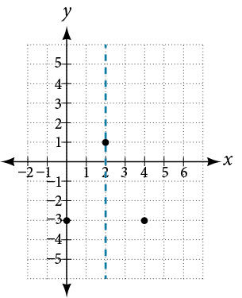 |
| Step 5 | To find the x-intercepts, substitute into and solve for The x-intercepts are (3, 0) and (1, 0) |
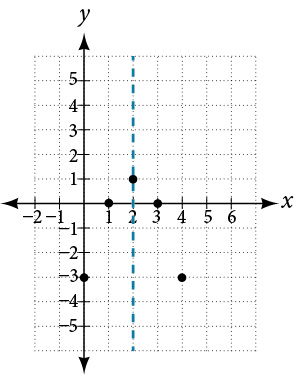 |
| Step 6 | Graph the parabola Axis of symmetry Vertex: (2,1) y-intercept: (0, -3), symmetric point: (4, -3) x-intercepts: (3, 0) and (1, 0) |
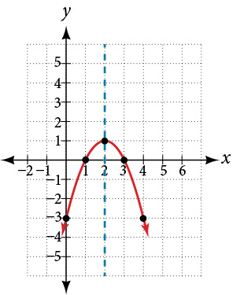 |
Practice Makes Perfect
Graph the parabola
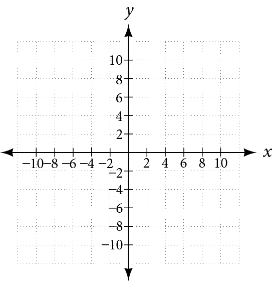
Objective 2: Graph a circle (IA 11.1.4)
Any equation of the form is the standard form of the equation of a circle with center, (h,k) and radius. We can then graph the circle on a rectangular coordinate system using the center and radius.
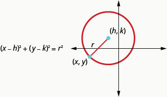
Graph a circle
- ⓐ Find the center and radius and then graph the circle
- ⓑ Find the center and radius and then graph the circle
Solution
- ⓐ
. Use the standard form of the equation of a circle. Identify the center, (h,k) and radius, r.
Center: (-3, -4)
Radius: 2Graph the circle 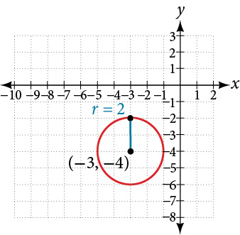
- ⓑ
We need to rewrite this general form into standard form in order to find the center and radius.
. Step 1
Group the x-terms and y-terms.
Collect the constants on the right side.Step 2
Complete the squaresStep 3
Rewrite as binomial squares.Step 4
Identify the center and radius.Center: (3,4)
Radius: 4Step 5
Graph the circle.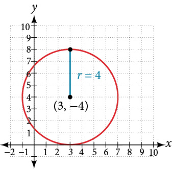
Practice Makes Perfect
Graph a circle.
Find the center and radius and then graph the circle
| Use the standard form of the equation of a circle. Identify the center, (h, k) and radius, r. | |
| Graph the circle | 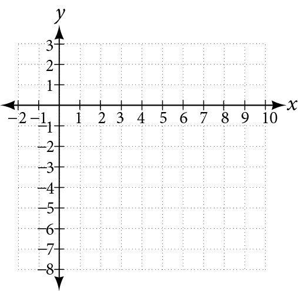 |
Find the center and radius and then graph the circle
| Step 1 Group the x-terms and y-terms. Collect the constants on the right side. |
|
| Step 2 Complete the squares |
________________________________________ |
| Step 3 Rewrite as binomial squares. |
________________________________________ |
| Step 4 Identify the center and radius. |
Center: ________ Radius: ________ |
| Step 5 Graph the circle. |
Halley’s Comet (Figure 1) orbits the sun about once every 75 years. Its path can be considered to be a very elongated ellipse. Other comets follow similar paths in space. These orbital paths can be studied using systems of equations. These systems, however, are different from the ones we considered in the previous section because the equations are not linear.
In this section, we will consider the intersection of a parabola and a line, a circle and a line, and a circle and an ellipse. The methods for solving systems of nonlinear equations are similar to those for linear equations.
Solving a System of Nonlinear Equations Using Substitution
A system of nonlinear equations is a system of two or more equations in two or more variables containing at least one equation that is not linear. Recall that a linear equation can take the form Any equation that cannot be written in this form is nonlinear. The substitution method we used for linear systems is the same method we will use for nonlinear systems. We solve one equation for one variable and then substitute the result into the second equation to solve for another variable, and so on. There is, however, a variation in the possible outcomes.
Intersection of a Parabola and a Line
There are three possible types of solutions for a system of nonlinear equations involving a parabola and a line.
Solving a System of Nonlinear Equations Representing a Parabola and a Line
Solve the system of equations.
Solution
Solve the first equation for and then substitute the resulting expression into the second equation.
Expand the equation and set it equal to zero.
Solving for gives and Next, substitute each value for into the first equation to solve for Always substitute the value into the linear equation to check for extraneous solutions.
The solutions are and which can be verified by substituting these values into both of the original equations. See Figure 3.
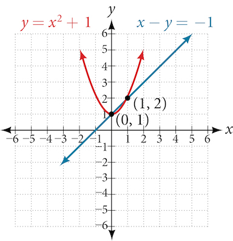
Intersection of a Circle and a Line
Just as with a parabola and a line, there are three possible outcomes when solving a system of equations representing a circle and a line.
Finding the Intersection of a Circle and a Line by Substitution
Find the intersection of the given circle and the given line by substitution.
Solution
One of the equations has already been solved for We will substitute into the equation for the circle.
Now, we factor and solve for
Substitute the two x-values into the original linear equation to solve for
The line intersects the circle at and which can be verified by substituting these values into both of the original equations. See Figure 5.
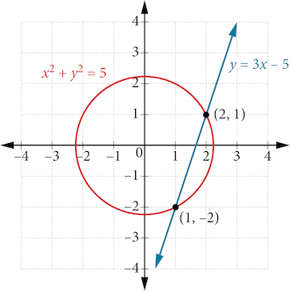
Solving a System of Nonlinear Equations Using Elimination
We have seen that substitution is often the preferred method when a system of equations includes a linear equation and a nonlinear equation. However, when both equations in the system have like variables of the second degree, solving them using elimination by addition is often easier than substitution. Generally, elimination is a far simpler method when the system involves only two equations in two variables (a two-by-two system), rather than a three-by-three system, as there are fewer steps. As an example, we will investigate the possible types of solutions when solving a system of equations representing a circle and an ellipse.
Solving a System of Nonlinear Equations Representing a Circle and an Ellipse
Solve the system of nonlinear equations.
Solution
Let’s begin by multiplying equation (1) by and adding it to equation (2).
After we add the two equations together, we solve for
Substitute into one of the equations and solve for
There are four solutions: See Figure 7.
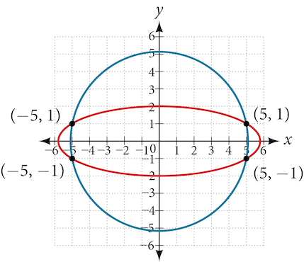
Graphing a Nonlinear Inequality
All of the equations in the systems that we have encountered so far have involved equalities, but we may also encounter systems that involve inequalities. We have already learned to graph linear inequalities by graphing the corresponding equation, and then shading the region represented by the inequality symbol. Now, we will follow similar steps to graph a nonlinear inequality so that we can learn to solve systems of nonlinear inequalities. A nonlinear inequality is an inequality containing a nonlinear expression. Graphing a nonlinear inequality is much like graphing a linear inequality.
Recall that when the inequality is greater than, or less than, the graph is drawn with a dashed line. When the inequality is greater than or equal to, or less than or equal to, the graph is drawn with a solid line. The graphs will create regions in the plane, and we will test each region for a solution. If one point in the region works, the whole region works. That is the region we shade. See Figure 8.
![This figure displays four graphs, each showing an inequality related to the parabola y = x^2 - 4. Graph (a) illustrates y > x^2 - 4 with a dashed parabolic boundary and the region above the parabola shaded in purple. Graph (b) shows y ≥ x^2 - 4 with a solid parabolic boundary and the region above the parabola shaded in orange. Graph (c) represents y < x^2 - 4 with a dashed parabolic boundary and the region below the parabola shaded in teal. Graph (d) depicts y ≤ x^2 - 4 with a solid parabolic boundary and the region below the parabola shaded in red.](../../media/CNX_Precalc_Figure_09_03_009.jpg)
Graphing an Inequality for a Parabola
Graph the inequality
Solution
First, graph the corresponding equation Since has a greater than symbol, we draw the graph with a dashed line. Then we choose points to test both inside and outside the parabola. Let’s test the points
and One point is clearly inside the parabola and the other point is clearly outside.
The graph is shown in Figure 9. We can see that the solution set consists of all points inside the parabola, but not on the graph itself.
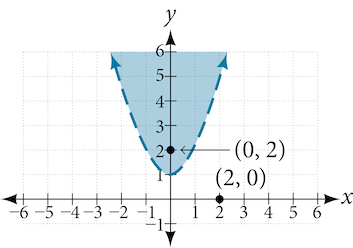
Graphing a System of Nonlinear Inequalities
Now that we have learned to graph nonlinear inequalities, we can learn how to graph systems of nonlinear inequalities. A system of nonlinear inequalities is a system of two or more inequalities in two or more variables containing at least one inequality that is not linear. Graphing a system of nonlinear inequalities is similar to graphing a system of linear inequalities. The difference is that our graph may result in more shaded regions that represent a solution than we find in a system of linear inequalities. The solution to a nonlinear system of inequalities is the region of the graph where the shaded regions of the graph of each inequality overlap, or where the regions intersect, called the feasible region.
Graphing a System of Inequalities
Graph the given system of inequalities.
Solution
These two equations are clearly parabolas. We can find the points of intersection by the elimination process: Add both equations and the variable will be eliminated. Then we solve for
Substitute the x-values into one of the equations and solve for
The two points of intersection are and Notice that the equations can be rewritten as follows.
Graph each inequality. See Figure 10. The feasible region is the region between the two equations bounded by on the top and on the bottom.
![A Cartesian coordinate system displays two parabolas. A red parabola opens upwards from the origin (0,0). A blue parabola opens downwards from its vertex at (0,12). The parabolas intersect at two points, marked with black dots and labeled as (-2,4) and (2,4). Shaded regions indicate the areas defined by the parabolas: the area between the two curves is shaded gray, the region above the red parabola and outside the blue parabola is shaded light red, and the region below the blue parabola and outside the red parabola is shaded light blue.](../../media/CNX_Precalc_Figure_09_03_011.jpg)
Key Concepts
- There are three possible types of solutions to a system of equations representing a line and a parabola: (1) no solution, the line does not intersect the parabola; (2) one solution, the line is tangent to the parabola; and (3) two solutions, the line intersects the parabola in two points. See Example 3.
- There are three possible types of solutions to a system of equations representing a circle and a line: (1) no solution, the line does not intersect the circle; (2) one solution, the line is tangent to the circle; (3) two solutions, the line intersects the circle in two points. See Example 4.
- There are five possible types of solutions to the system of nonlinear equations representing an ellipse and a circle:
(1) no solution, the circle and the ellipse do not intersect; (2) one solution, the circle and the ellipse are tangent to each other; (3) two solutions, the circle and the ellipse intersect in two points; (4) three solutions, the circle and ellipse intersect in three places; (5) four solutions, the circle and the ellipse intersect in four points. See Example 5. - An inequality is graphed in much the same way as an equation, except for > or <, we draw a dashed line and shade the region containing the solution set. See Example 6.
- Inequalities are solved the same way as equalities, but solutions to systems of inequalities must satisfy both inequalities. See Example 7.
Section Exercises
Verbal
Explain whether a system of two nonlinear equations can have exactly two solutions. What about exactly three? If not, explain why not. If so, give an example of such a system, in graph form, and explain why your choice gives two or three answers.
Solution
A nonlinear system could be representative of two circles that overlap and intersect in two locations, hence two solutions. A nonlinear system could be representative of a parabola and a circle, where the vertex of the parabola meets the circle and the branches also intersect the circle, hence three solutions.
When graphing an inequality, explain why we only need to test one point to determine whether an entire region is the solution?
When you graph a system of inequalities, will there always be a feasible region? If so, explain why. If not, give an example of a graph of inequalities that does not have a feasible region. Why does it not have a feasible region?
Solution
No. There does not need to be a feasible region. Consider a system that is bounded by two parallel lines. One inequality represents the region above the upper line; the other represents the region below the lower line. In this case, no points in the plane are located in both regions; hence there is no feasible region.
If you graph a revenue and cost function, explain how to determine in what regions there is profit.
If you perform your break-even analysis and there is more than one solution, explain how you would determine which x-values are profit and which are not.
Solution
Choose any number between each solution and plug into and If then there is profit.
Algebraic
For the following exercises, solve the system of nonlinear equations using substitution.
Solution
Solution
For the following exercises, solve the system of nonlinear equations using elimination.
Solution
Solution
Solution
For the following exercises, use any method to solve the system of nonlinear equations.
Solution
Solution
Solution
Solution
For the following exercises, use any method to solve the nonlinear system.
Solution
Solution
No Solutions Exist
Solution
No Solutions Exist
Solution
Solution
Solution
Solution
Graphical
For the following exercises, graph the inequality.
Solution
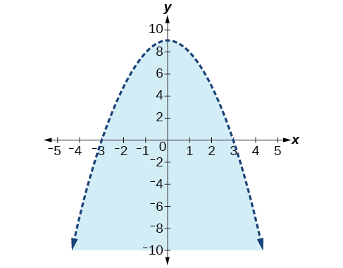
For the following exercises, graph the system of inequalities. Label all points of intersection.
Solution

Solution
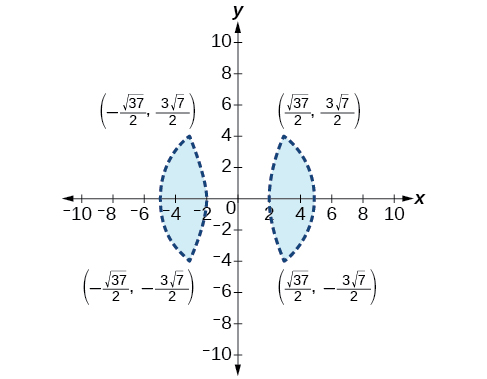
Solution
![A graph of a coordinate plane showing an x-axis and a y-axis. The region between two branches of a hyperbola is shaded light blue. The hyperbola opens upwards and downwards, with the shaded region resembling an hourglass shape. The vertices of the hyperbola are marked by the points (sqrt(19/10), sqrt(47/10)), (-sqrt(19/10), sqrt(47/10)), (sqrt(19/10), -sqrt(47/10)), and (-sqrt(19/10), -sqrt(47/10)). The boundaries of the shaded region are indicated by dashed lines, suggesting that the boundary itself is not included in the region.](../../media/CNX_Precalc_Figure_09_03_209.jpg)
Extensions
For the following exercises, graph the inequality.
Solution
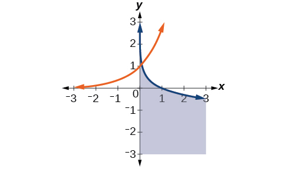
For the following exercises, find the solutions to the nonlinear equations with two variables.
Solution
Solution
No Solution Exists
Technology
For the following exercises, solve the system of inequalities. Use a calculator to graph the system to confirm the answer.
Solution
and
Real-World Applications
For the following exercises, construct a system of nonlinear equations to describe the given behavior, then solve for the requested solutions.
Two numbers add up to 300. One number is twice the square of the other number. What are the numbers?
Solution
12, 288
The squares of two numbers add to 360. The second number is half the value of the first number squared. What are the numbers?
A laptop company has discovered their cost and revenue functions for each day: and If they want to make a profit, what is the range of laptops per day that they should produce? Round to the nearest number which would generate profit.
Solution
2–20 computers
A cell phone company has the following cost and revenue functions: and What is the range of cell phones they should produce each day so there is profit? Round to the nearest number that generates profit.